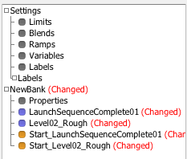
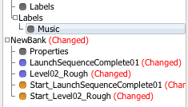
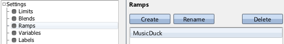
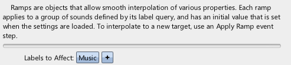
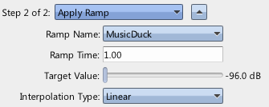
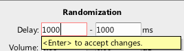
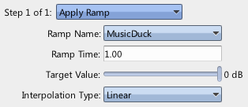
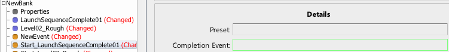

|
Ducking and Ramps |
| Related: | Text | Navigation |
This walkthrough will discuss decreasing the volume of a group of sounds, so that another may be heard more easily when it plays, and then returning the previous sounds to their original volume upon completion.
Requisite Terminology
New Terminology
Steps



This creates a Ramp that can be referenced by an Apply Ramp Event Step in an Event. This ramp will be responsible for attentuating the sound with the Music label while the shorter sound plays.

By default, ramps have an empty label query, so they affect all sounds. We want this ramp to only affect our Music sound. Also note that the Initial Value defaults to "has no effect". For volume ramps, this means 0 dB - they will not attentuate any affected sounds. Similarly, playback rate ramps default to 0 sT, and low pass cutoff ramps default to 24khz.

Now, immediately after the sound is started, the MusicDuck ramp smoothly moves the volume of the sound with the Music label to silence. However, the ramp takes 1 full second, and our sound starts immediately.

This causes the sound to delay starting for 1 second, so the MusicDuck ramp has time to attentuate the sound with the Music label. However the sound with the Music label has no way to return to full volume. To move the sound with the Music label back to full volume, we need another Apply Ramp event step.


Completion events are events that are automatically run when a sound completes. In this case, the completion event runs the event containing the Apply Ramp event step that returns the sound with the Music label back to full volume.
Due to the effects of the MusicDuck ramp, the second sound played will silence the sound with the Music label before playing. Then, upon completion, it will restore the sound with the Music label to full volume.
 Cross Fading Cross Fading |
 Sound Designer User Guide Sound Designer User Guide |
 Presets and Variables Presets and Variables |

|
Miles Sound System 9.3b
E-mail miles3@radgametools.com for technical support. Copyright © 1991-2012 by RAD Game Tools, Inc. All Rights Reserved. |

|